Shaders, live.
Plugins, made.
GLim plays GLSL shaders live and turns them into plugins for your VJ software: FFGL for Resolume, ISF for MadMapper. Every parameter gets a slider. Free and open source.
Version 0.9 beta · Windows 10 and 11 · macOS 14+ on Apple Silicon
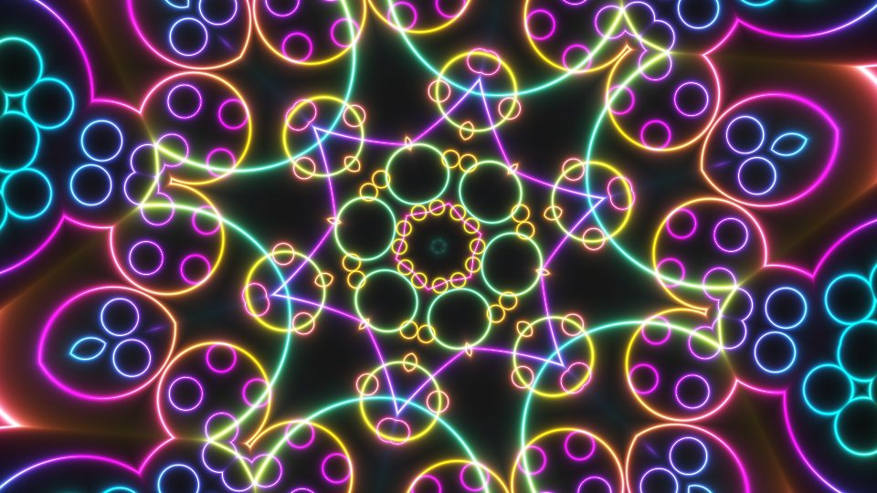
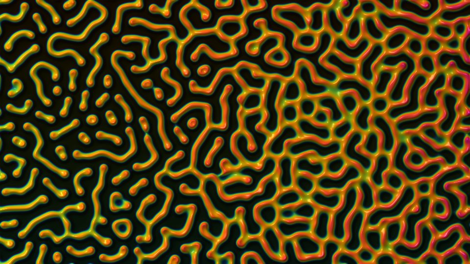
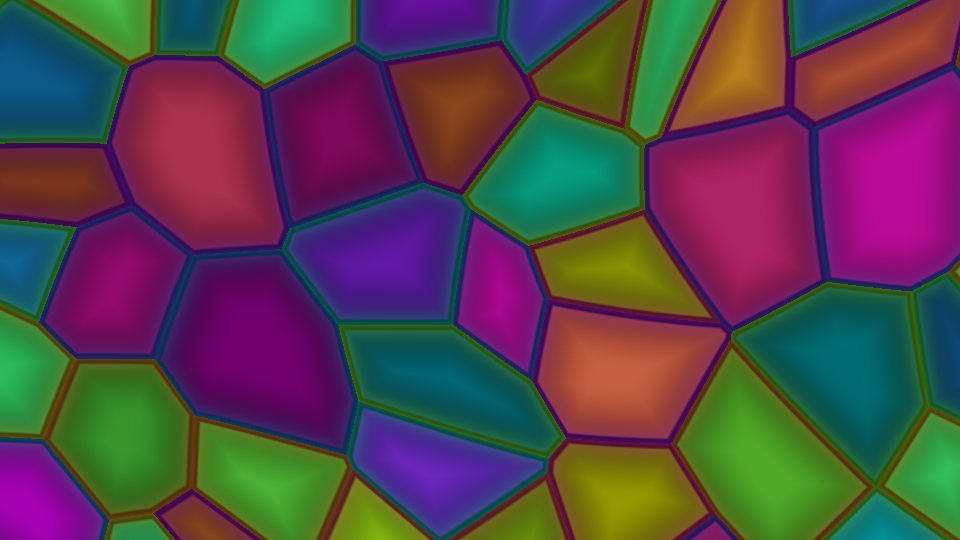
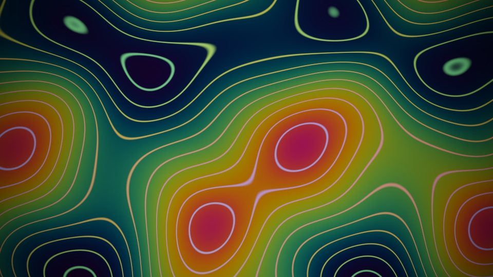
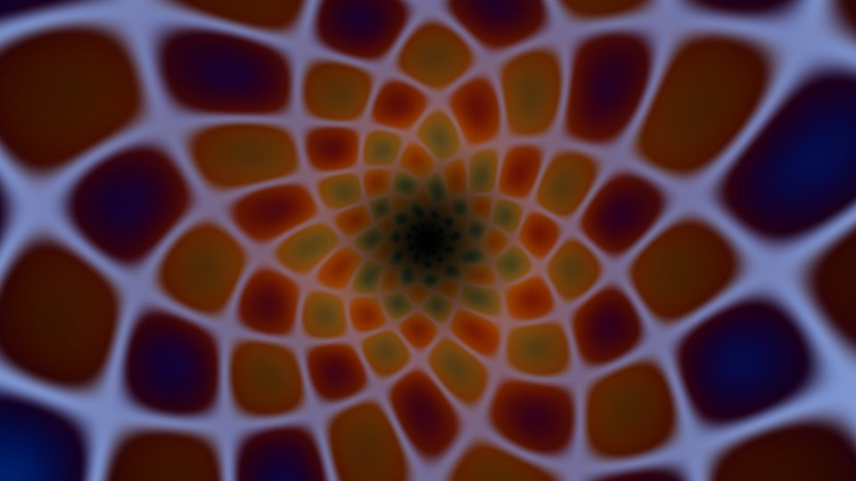
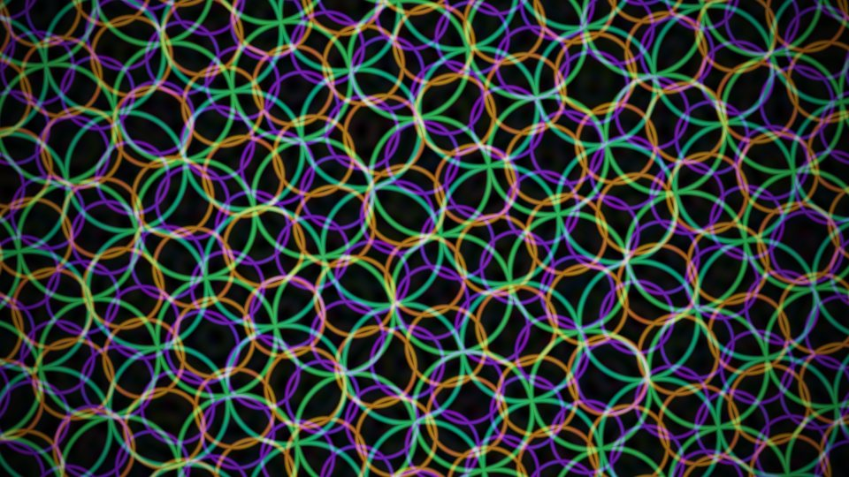
Play it, tweak it, take it anywhere
Drop in a folder of shader files. GLim previews them on your graphics card, gives every parameter a control, and sends the result where you need it.
Playlists and slideshows
Step through a queue of shaders with the arrow keys, or let Auto play them as a looping slideshow. A queue can drive a whole show.
Live parameters
Every parameter gets a slider, switch or menu that changes the shader as it plays. In GLim and in the plugins, speed sliders change the pace without the motion jumping.
Fullscreen and Spout, Syphon, NDI®
Fullscreen on any monitor or projector, or send to Resolume, MadMapper, OBS and TouchDesigner: Spout and Syphon on the same computer, NDI across the network.
Remote control
Run playback, the slideshow, the outputs and the shader's parameters from a phone or tablet over OSC. TouchOSC layouts for both are included.
FFGL plugins for Resolume
Build a shader into an FFGL 2 plugin for Resolume 7.21.3 and later: a .dll on Windows, a universal .bundle on macOS, with your parameters as Resolume controls.
ISF files for MadMapper
Export any shader as an ISF 2 file for MadMapper, VDMX, Millumin and other ISF hosts.
How it works
No coding needed to use it. If you do write shaders, GLim handles the plumbing between formats.
Drop shaders on the queue
Files or whole folders: ISF (.fs), Shadertoy and GLSL Sandbox code (.txt or .glsl). Multi-pass projects work too.
Play and tweak in Studio
Preview each shader live, move its sliders, check how hard it works your graphics card, and save your settings with the shader.
Build or export
Click Build FFGL for a Resolume plugin or Export ISF for MadMapper. GLim checks the result on your GPU first.
Respect the license. Shaders you find online belong to the people who wrote them, and their licenses still apply to the plugins and ISF files you make from them. Many are for non-commercial use only, and most ask for credit. Check a shader's terms before you perform with it or share what you build, and keep the author's credit (more in the manual). The 18 shaders that come with GLim are public domain, so you can use them however you like.
18 shaders to start with
GLim comes with 18 shaders written for it: fourteen evolving patterns and four building blocks to layer into your own looks. They're public domain (CC0), so the plugins you build from them are yours to use and share.
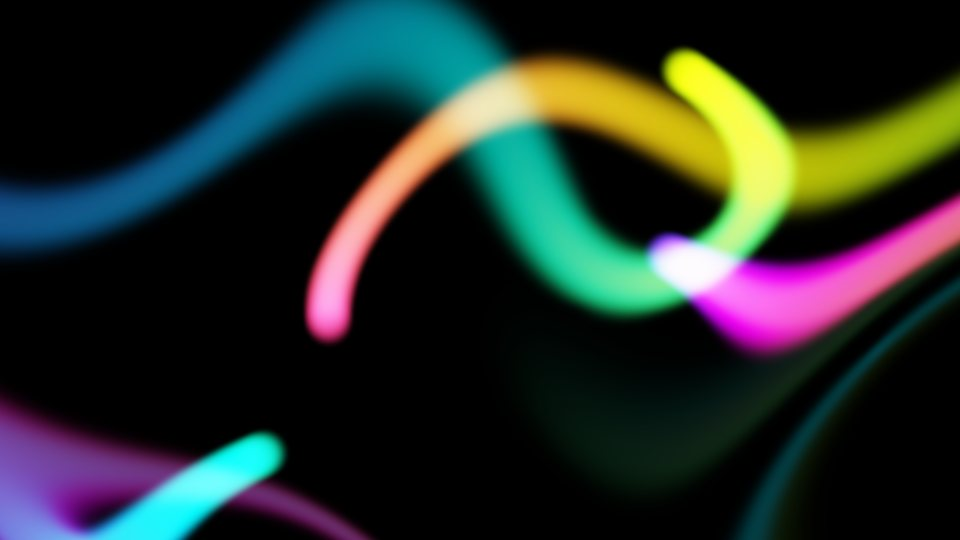
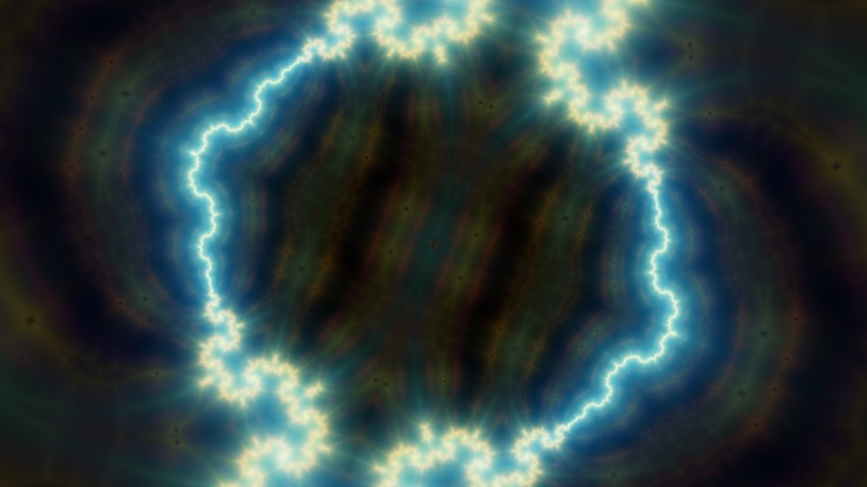
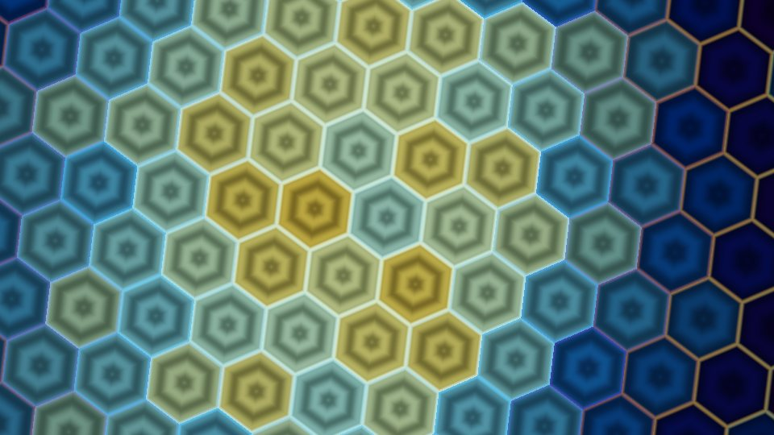
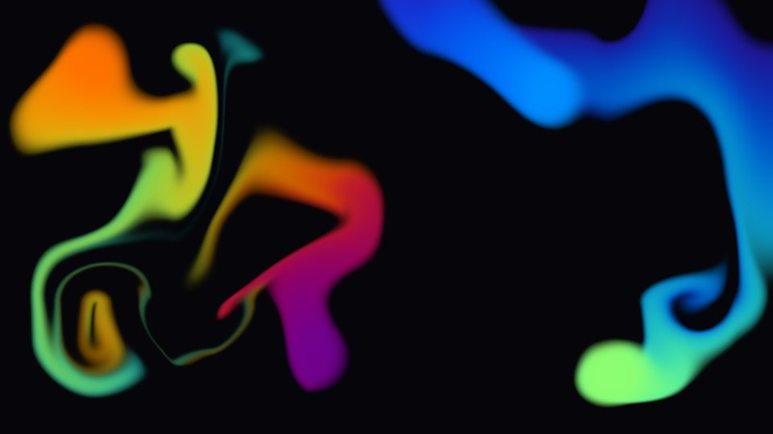
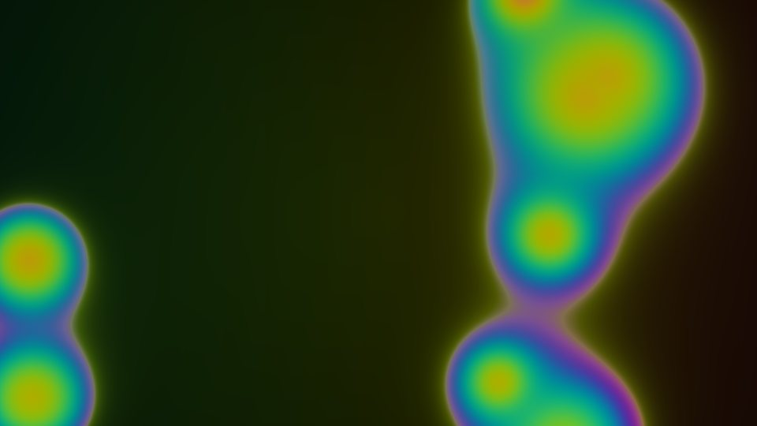
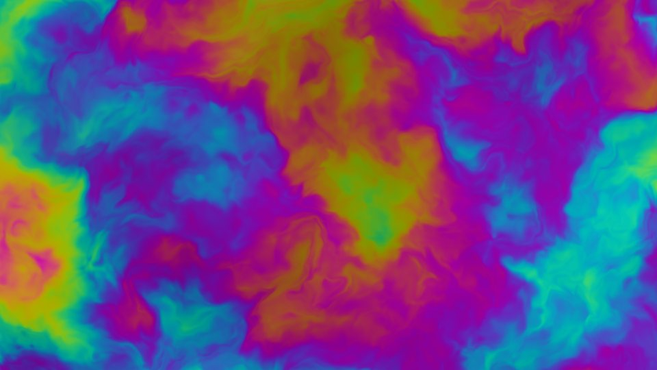
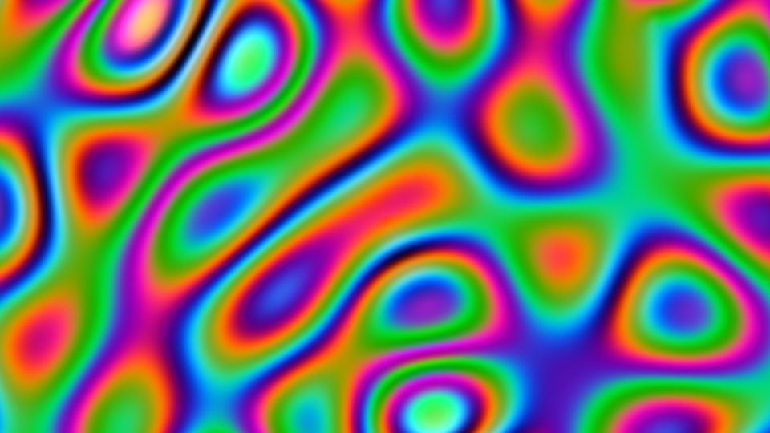
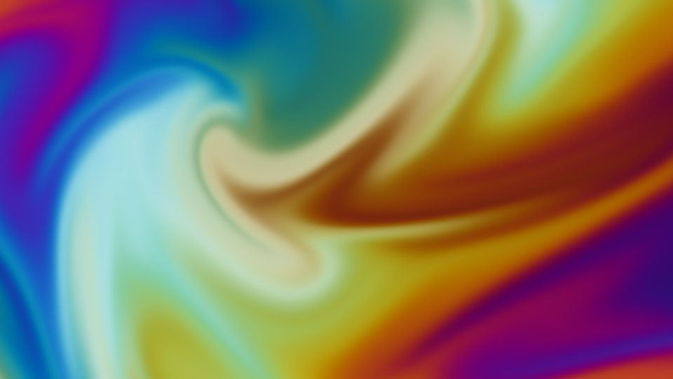
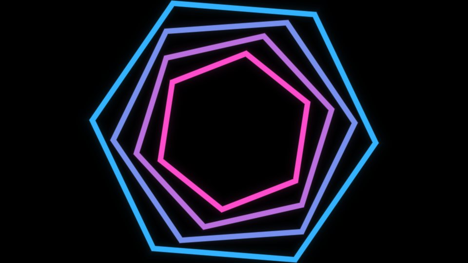
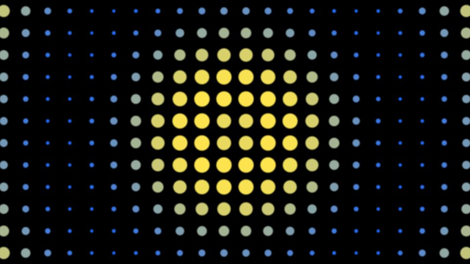
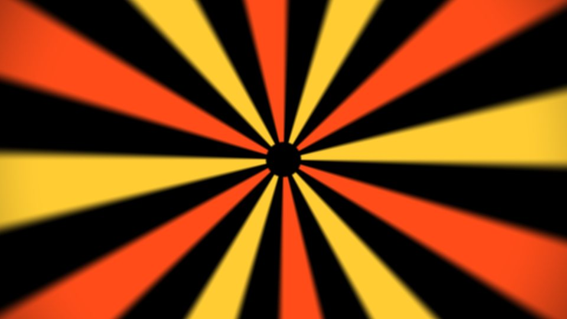
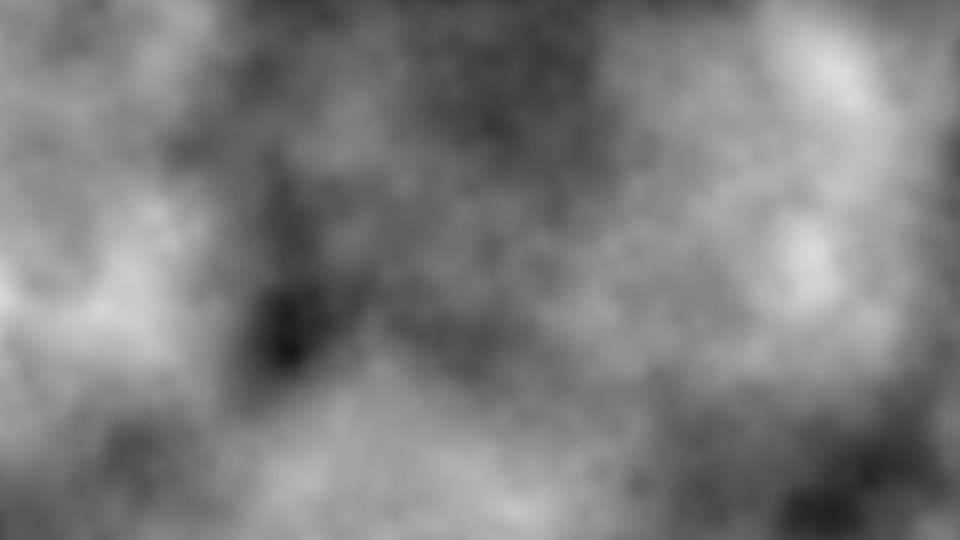
Download
GLim is in beta. Downloads are on the GitHub Releases page: pick the zip for your computer under Assets. Each zip has the app, the manual, the 18 shaders and the TouchOSC layouts. There's no installer: unzip it and run.
Windows
GLim-version-windows.zip
- 64-bit Windows 10 or 11
- A graphics card with OpenGL 4.1
- For building plugins: Microsoft's free Build Tools for Visual Studio
macOS
GLim-version-macos.zip
- Apple Silicon (M1 or later), macOS 14 Sonoma or later
- Plugins it builds are universal (Intel too)
- For building plugins: Xcode Command Line Tools and CMake
The apps aren't code-signed yet, so Windows and macOS ask you to confirm the first time you open GLim. The manual walks you through it.
Open source
GLim is released under the MIT license. The source, the test suite and the issue tracker are on GitHub. Bug reports, shaders that won't convert and ideas are all welcome.